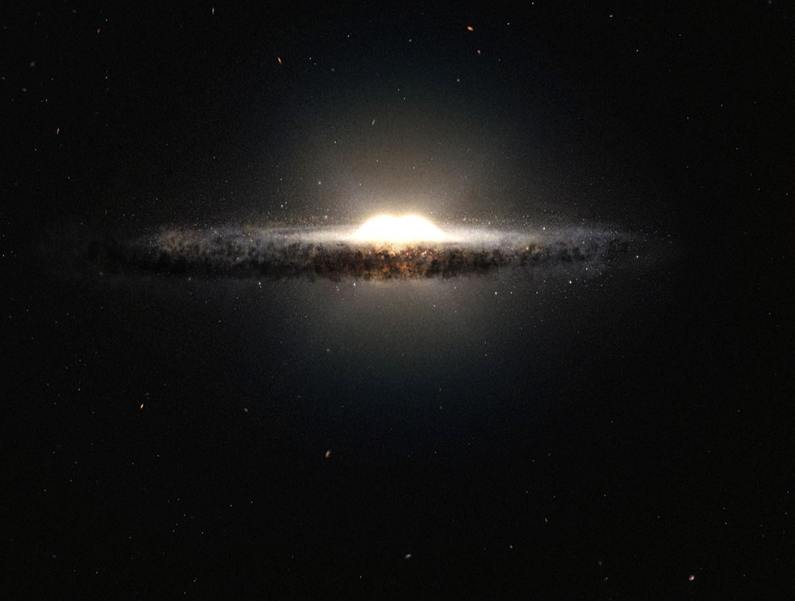
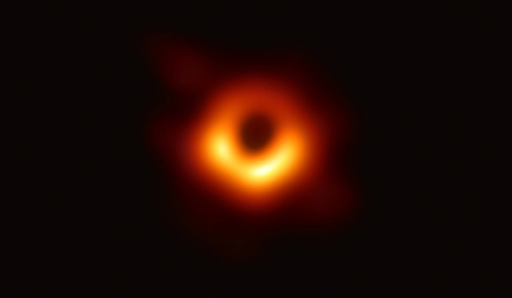
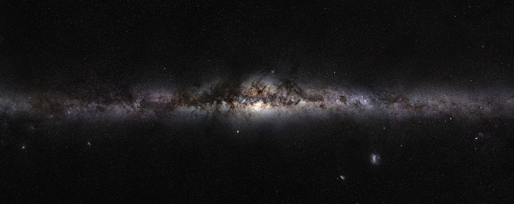

星座为什么会变化
先看一个常见的疑问：昨晚八点，猎户座在东南方；今晚八点，它在同一位置吗？答案是不在。原因有两个，一个是地球自转，一个是地球公转。这两件事造成的效果完全不同，值得分开说。
每晚的变化：地球自转
地球自转是「一夜之间」的变化。星星和太阳、月亮一样，因为地球自西向东转，看起来是东升西落。
任何一颗星，每小时向西移动约 15°——因为 360° ÷ 24 小时 = 15°。这就是为什么同一片星空，晚上十点看到的和凌晨两点看到的完全不同。
由于星星在动（看上去），天文学家引入了天球的概念：把整个天空想象成一个巨大的球壳，所有天体都嵌在这个球面上，地球在球心。这当然不是真实结构——星星离我们的远近差别极大——但它让描述位置与运动变得方便。
在这个模型里，天体位置的移动就是天球在旋转。这不是比喻，而是坐标系的定义方式。

每月的同一天：地球公转
更值得讲的是第二种变化。如果你固定「每晚八点」这个时刻，一个月后再看，同一片天空会整体西移约 30°。
原因不在星星，而在我们：地球绕太阳公转，位置变了。每晚八点时，地球在轨道上已转过一小段，背对太阳的方向随之改变——于是朝向我们的那部分天球也变了。
一个直观的类比：夜晚坐在行驶的车里看窗外的路灯。车往前开，近处的灯迅速后退，远处的山几乎不动。地球公转也是如此：我们朝向的星空像车窗外的风景一样在换，而星空本身没有任何一颗星因此移动。
公转一年转 360°，平均每天约 1°。一个月约 30°，一个季节约 90°——这正好解释了一个季度换一季星空。
黑洞真的是「洞」吗
不是。黑洞不是空间中的一个窟窿，而是一个物质被压缩到极限的天体。
它的成因可以这样理解：一颗大质量恒星燃料耗尽后，如果剩余质量足够大，就没有任何已知的力能支撑它抵抗自身引力，物质会持续向内坍缩。坍缩到最后，所有质量集中到一个极小的区域内，那里的引力强到连光都无法逃离。
由于光出不来，它不发光，我们看不见它本身——所以我们叫它「黑」。而「洞」这个字是历史遗留的误称。
它之所以看起来像一个洞，是因为周围的东西：被吸引过来的气体在高速旋转中摩擦升温，形成明亮的吸积盘。我们看到的那个亮环，是吸积盘的光，中间的黑影才是黑洞本身。

几个具体数字
- 照片中的这个黑洞位于 M87 星系中心，质量约为太阳的 65 亿倍，距离地球约 5,500 万光年。
- 它的事件视界（光无法逃逸的边界）直径约 400 亿公里——比整个太阳系的行星轨道范围还大。
- 这张照片由事件视界望远镜（EHT）拍摄，是分布在全球多地的射电望远镜联合观测的结果，等效于一台口径接近地球直径的望远镜。数据于 2017 年采集，2019 年公布。
一个容易混淆的点
既然光都逃不出来，为什么还能「看见」它？答案是我们看到的从来不是黑洞本身，而是它对周围物质的影响。就像你无法看见风，但能看见树叶被吹动——黑洞的存在通过周围气体的运动和辐射表现出来。
还需要说明：黑洞并不会「吸走」周围的一切。在足够远的距离上，它的引力表现与同等质量的普通天体相同。如果太阳突然变成一个黑洞（它不会），地球的轨道不会有任何变化——只是会变得又冷又黑。
我们所看见的银河是什么
这是最容易被误解的一个问题：我们看见的那条「银河」，不是银河系的全部，而是银河系盘面在我们视线方向上的投影。
我们身处银河系之内，位置在盘面上，距离中心约 2.6 万光年。从这个位置向外看，盘面上密集的恒星在视线方向上层层堆叠，形成一条横贯天空的亮带。如果从银河系外部俯视，看到的会是一个旋涡状的星系；而我们看到的这条带，只是它盘面的侧影。

为什么它叫「天河」或者「milky way」
古代观测者没有望远镜，只能看到这条带子模糊、发亮、像一条路或一条河。直到伽利略在 1610 年把望远镜对准它，才发现它由无数颗暗星组成——那不是气体或云，而是密集到肉眼无法分辨的恒星。
暗带是什么
仔细看银河，会发现它中间并不是均匀亮的，而是有明显的暗缝。这不是没有星星，而是尘埃挡住了后面的星光。银河系盘面上分布着大量星际尘埃，它们不透光，在我们与更远处恒星之间形成遮挡。
中国传统的「牛郎织女被银河分隔」，说的正是这条暗带位置附近的景象。
银河与旋臂的关系
银河系是一个棒旋星系，盘面上有几条主要旋臂。太阳系位于一条叫猎户臂（或称猎户-天鹅臂）的次级旋臂上，介于英仙臂和人马臂之间。
我们看到的银河某些较亮的段落，对应的正是视线方向上旋臂较密集的部分——但需要说明：肉眼无法分辨出「一条旋臂」。旋臂是恒星密度略高的区域，在天空上表现为亮度与尘埃分布的起伏，而不是一条边界清晰的带子。把银河说成「银河系的一条旋臂」是常见但不够准确的说法：我们看到的是整个盘面叠加的结果，其中包含了多条旋臂的贡献。